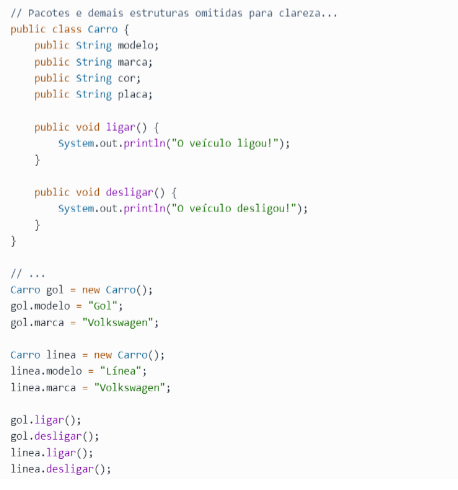

Os objetos possuem características ou também comportamentos pelas quais os identificamos e as finalidades para as quais são utilizados. Essas características são tipicamente chamadas de atributos, no linguajar da programação OO.
Exemplo:
Se pararmos para pensar, nós podemos falar que um carro pode ser caracterizado pelos seguintes itens:
◉ Marca;
◉ Modelo;
◉ Cor;
◉ Placa.
Também podemos dizer que um carro pode ter as seguintes ações:
◉ Ligar;
◉ Acelerar;
◉ Desligar.
Na linguagem da programação as características atribuídas ao objeto, neste caso o carro, são os atributos, e suas ações são os métodos. 